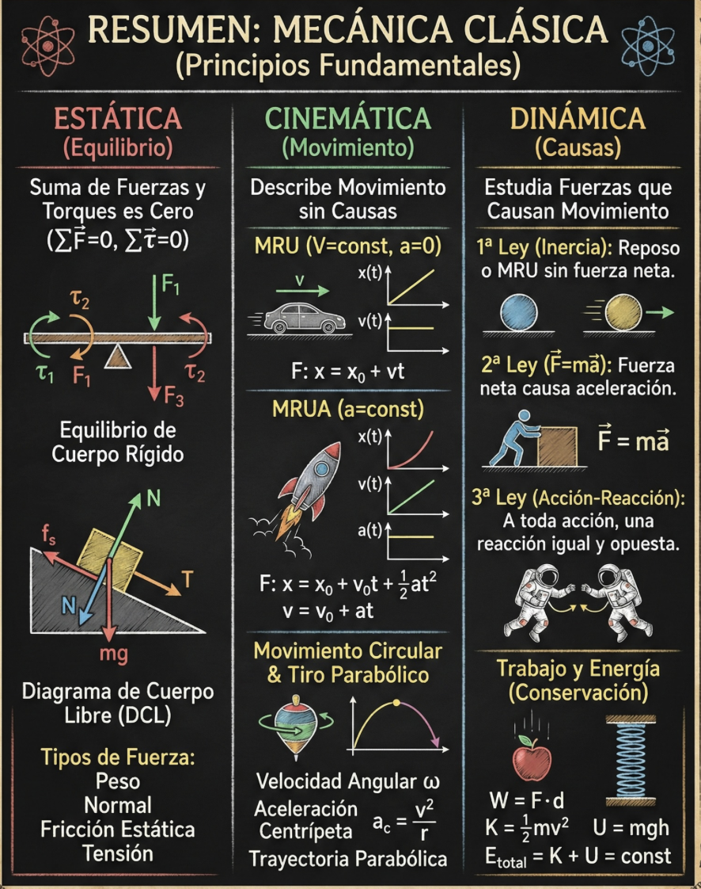
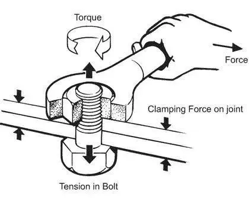
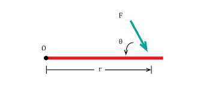
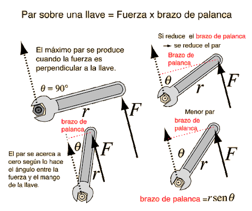
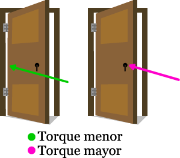
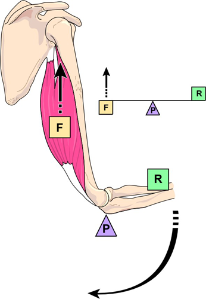
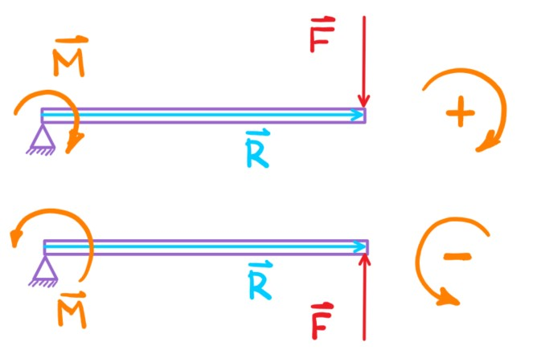
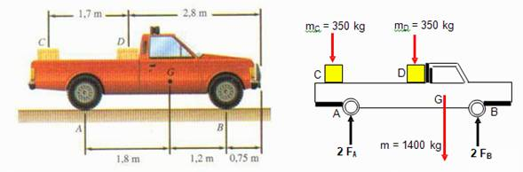
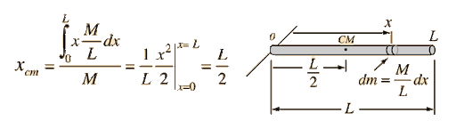
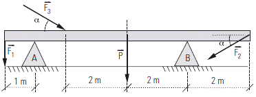

Unidad 8: Estática del sólido rígido#
Descripción general#
La mecánica clásica estudia el movimiento y el equilibrio de los cuerpos materiales. Se organiza en tres grandes ramas, cada una con un enfoque distinto:
Rama |
Qué estudia |
Pregunta central |
|---|---|---|
Cinemática |
El movimiento en sí mismo: posición, velocidad y aceleración, sin considerar las causas. |
¿Cómo se mueve el cuerpo? |
Dinámica |
Las causas del movimiento. Relaciona fuerzas con aceleraciones mediante las leyes de Newton. |
¿Por qué se mueve (o acelera) el cuerpo? |
Estática |
Las condiciones bajo las cuales un cuerpo permanece en equilibrio, sin trasladarse ni rotar. |
¿Por qué el cuerpo no se mueve? |
Esta unidad se centra en la estática del sólido rígido.
En esta unidad se estudia el equilibrio de cuerpos rígidos. A diferencia del análisis de una partícula, aquí interesa no solo la traslación del cuerpo, sino también su posible rotación. Para ello se introduce el concepto de torque o momento de una fuerza, que mide la tendencia de una fuerza a producir un giro alrededor de un punto o eje.
Se establecerán las condiciones necesarias para que un sólido rígido permanezca en equilibrio estático.
{kind=link}

Objetivo de aprendizaje#
Al finalizar esta unidad, el estudiante será capaz de:
Comprender el concepto de torque y su significado físico.
Calcular el torque de una fuerza respecto de un punto o eje.
Aplicar la convención de signos para el sentido de rotación.
Identificar las condiciones de equilibrio estático.
Resolver problemas simples de barras y cuerpos rígidos en equilibrio.
1. Introducción a la estática del sólido rígido#
La estática es la parte de la mecánica que estudia las condiciones bajo las cuales un cuerpo permanece en reposo.
Cuando se trata de un sólido rígido, no basta con exigir que la fuerza neta sea cero. También es necesario que no exista tendencia a rotar.
Por ello, en el estudio del equilibrio de un cuerpo rígido intervienen dos condiciones:
Equilibrio traslacional.
Equilibrio rotacional.
Ejemplo
Un libro descansa sobre una mesa. Ahora se le aplica una fuerza lateral en uno de sus extremos. Aunque la fuerza neta vertical puede ser cero, el libro tiende a rotar.
¿Por qué no basta con exigir \(\sum \vec{F} = 0\) para garantizar el reposo?
Respuesta: esa condición solo asegura que no hay aceleración traslacional. Para que el libro quede completamente en reposo también debe cumplirse \(\sum \tau = 0\), condición que controla la rotación.
2. Sólido rígido#
Un sólido rígido es un modelo ideal de cuerpo cuyas partículas mantienen distancias fijas entre sí, aun cuando actúen fuerzas externas.
Aunque en la realidad todo cuerpo puede deformarse, este modelo es muy útil para estudiar:
Barras.
Vigas.
Balanzas.
Estructuras simples.
Cuerpos en equilibrio.
Ejemplo
Clasifique los siguientes objetos como sólidos rígidos (para un análisis estático típico) o no:
Una viga de acero de 5 m sometida a cargas normales de construcción
Una goma de borrar aplastada al apoyar la mano
Una escalera de madera apoyada contra una pared
Respuesta: la viga y la escalera se modelan habitualmente como sólidos rígidos porque sus deformaciones son despreciables frente a sus dimensiones y a las fuerzas involucradas. La goma, en cambio, se deforma de manera apreciable y el modelo de sólido rígido no aplica en ese caso.
3. Torque o momento de una fuerza#
{kind=link}
El torque mide la tendencia de una fuerza a producir una rotación alrededor de un punto o eje.
En forma vectorial se define como:
donde:
\(\vec{r}\) es el vector posición desde el eje o punto de giro hasta el punto de aplicación de la fuerza.
\(\vec{F}\) es la fuerza aplicada.
{kind=link}

Magnitud del torque#
La magnitud del torque se calcula como:
donde:
\(r\) es la distancia desde el eje al punto de aplicación.
\(F\) es la magnitud de la fuerza.
\(\theta\) es el ángulo entre \(\vec{r}\) y \(\vec{F}\).
{kind=link}

Unidad de medida#
La unidad del torque en el Sistema Internacional es:
Ejemplo
Una llave de torque aplica una fuerza de \(F = 15\,\text{N}\) sobre un perno, en un punto ubicado a \(r = 0{,}4\,\text{m}\) del eje de la tuerca. El ángulo entre la fuerza y el vector de posición es \(\theta = 60°\). Calcule el torque producido.
Solución:
{kind=link}

4. Interpretación física del torque#
El torque depende de tres factores:
La magnitud de la fuerza.
La distancia al eje de rotación.
El ángulo con que actúa la fuerza.
Consecuencias#
Una fuerza más grande produce mayor tendencia al giro.
Una fuerza aplicada más lejos del eje produce mayor torque.
Si la fuerza actúa en la misma dirección de \(\vec{r}\), el torque es cero.
Esto explica por qué resulta más fácil abrir una puerta empujando lejos de las bisagras que cerca de ellas.
Ejemplo
Una puerta tiene las bisagras en uno de sus extremos. Una persona A empuja con \(10\,\text{N}\) a \(0{,}9\,\text{m}\) de las bisagras, otra persona B empuja con la misma fuerza (\(10\,\text{N}\)) a \(0{,}3\,\text{m}\) de las bisagras. Compare los torques producidos.
Solución:
Persona A produce un torque tres veces mayor que persona B a pesar de aplicar la misma fuerza. La diferencia radica únicamente en la distancia al eje.
{kind=link}

5. Brazo de palanca#
En muchos problemas, el torque puede calcularse usando el brazo de palanca, que es la distancia perpendicular desde el eje de rotación hasta la línea de acción de la fuerza.
{kind=link}

Entonces:
donde \(d_\perp\) es el brazo de palanca.
Esta forma es equivalente a la expresión:
y muchas veces resulta más intuitiva.
Ejemplo
Una fuerza de \(F = 25\,\text{N}\) actúa sobre un sistema con pivote. La distancia perpendicular desde el pivote hasta la línea de acción de la fuerza (brazo de palanca) es \(d_\perp = 0{,}3\,\text{m}\). Calcule el torque.
Solución:
No fue necesario conocer el ángulo exacto entre la fuerza y \(\vec{r}\): basta con la distancia perpendicular a la línea de acción.
Arquímedes y la ley de la palanca#

Dadme un punto de apoyo y moveré el mundo.
—Arquímedes de Siracusa (c. 287–212 a. C.)
Arquímedes fue uno de los primeros en estudiar matemáticamente el equilibrio de la palanca. Su resultado principal, conocido como la ley de la palanca, establece que dos fuerzas verticales mantienen una palanca horizontal en equilibrio cuando los productos de cada fuerza por su distancia al pivote son iguales:
Esta expresión es equivalente a la condición de equilibrio rotacional (\(\sum \tau = 0\)) aplicada al pivote: cada término \(F_i \cdot d_i\) es precisamente el torque de la fuerza \(F_i\) respecto del punto de apoyo.
La frase de Arquímedes no era solo retórica: si se dispone de una palanca suficientemente larga y un punto de apoyo adecuado, una fuerza pequeña puede equilibrar un peso enormemente mayor, simplemente aplicándose a una distancia mucho mayor del pivote.
Ejemplo resuelto
Una palanca horizontal está apoyada en su pivote. A la izquierda, a \(0{,}5\,\text{m}\) del pivote, actúa un peso de \(200\,\text{N}\). ¿A qué distancia del pivote, al lado derecho, debe aplicarse una fuerza de \(50\,\text{N}\) para mantener el equilibrio?
Solución:
Aplicando la ley de la palanca:
Una fuerza cuatro veces menor necesita aplicarse cuatro veces más lejos del pivote para producir el mismo torque.
6. Convención de signos para el torque#
Para trabajar en dos dimensiones, se adopta una convención de signos:
Si la fuerza tiende a producir una rotación antihoraria, el torque es positivo.
Si la fuerza tiende a producir una rotación horaria, el torque es negativo.
{kind=link}

Esta convención permite sumar algebraicamente los torques en problemas planos.
Ejemplo
Sobre un pivote actúan dos fuerzas: \(F_1 = 8\,\text{N}\) a \(0{,}5\,\text{m}\) con tendencia antihoraria, y \(F_2 = 12\,\text{N}\) a \(0{,}3\,\text{m}\) con tendencia horaria. Determine la suma de torques y el sentido de rotación neto.
Solución:
El torque neto es positivo: la tendencia de rotación resultante es en sentido antihorario.
7. Torque nulo#
El torque es cero en cualquiera de los siguientes casos:
a) La fuerza es cero#
b) La distancia al eje es cero#
es decir, la fuerza se aplica exactamente sobre el eje de rotación.
c) La fuerza y el vector posición son paralelos#
entonces:
y por tanto:
Ejemplo
Determine si el torque es nulo en cada caso:
a) una fuerza de 10 N aplicada exactamente sobre el eje de rotación (\(r = 0\))
b) una fuerza de 0 N aplicada a 2 m del eje (\(F = 0\))
c) una fuerza de 5 N a 1 m del eje, con \(\theta = 0°\) (fuerza paralela a \(\vec{r}\))
d) una fuerza de 5 N a 1 m del eje, con \(\theta = 90°\)
Respuesta:
a) \(\tau = 0 \times 10 \times \sin\theta = 0\) — torque nulo porque \(r = 0\)
b) \(\tau = 2 \times 0 \times \sin\theta = 0\) — torque nulo porque \(F = 0\)
c) \(\tau = 1 \times 5 \times \sin 0° = 0\) — torque nulo porque la fuerza es paralela al brazo
d) \(\tau = 1 \times 5 \times \sin 90° = 5\,\text{N}\cdot\text{m}\) — torque no nulo; este es el ángulo de máxima eficiencia
8. Equilibrio estático#
Un cuerpo rígido está en equilibrio estático cuando permanece en reposo sin trasladarse ni rotar.
Para que esto ocurra, deben cumplirse simultáneamente dos condiciones.
{kind=link}
Condición 1: equilibrio traslacional#
La suma de todas las fuerzas que actúan sobre el cuerpo debe ser cero:
Esto garantiza que no haya aceleración lineal.
Condición 2: equilibrio rotacional#
La suma de todos los torques respecto de cualquier punto debe ser cero:
Esto garantiza que no haya aceleración angular.
Ejemplo
Una caja de 20 kg descansa sobre una mesa. Dos personas la sostienen: la primera ejerce \(F_1 = 80\,\text{N}\) hacia arriba y la segunda ejerce \(F_2\) también hacia arriba. Si el sistema está en equilibrio, determine \(F_2\). (\(g = 10\,\text{m/s}^2\))
Solución:
Condición de equilibrio traslacional (eje vertical):
9. Equilibrio traslacional en componentes#
En problemas bidimensionales, la condición de equilibrio traslacional suele escribirse en componentes:
Estas ecuaciones permiten analizar las fuerzas horizontales y verticales por separado.
Ejemplo
Una lámpara de \(m = 5\,\text{kg}\) cuelga del techo mediante dos cables que forman \(45°\) con la horizontal. Por simetría, la tensión en cada cable es igual. Determine la tensión \(T\). (\(g = 10\,\text{m/s}^2\))
Solución:
Por simetría, \(T_1 = T_2 = T\).
10. Equilibrio rotacional#
La condición de equilibrio rotacional se expresa como:
Es importante recordar que los torques deben calcularse respecto de un mismo punto de referencia.
Elección del punto de referencia#
El punto respecto del cual se calculan torques puede elegirse de manera conveniente.
Una buena elección puede simplificar mucho el problema, por ejemplo anulando el torque de fuerzas desconocidas que pasan por ese punto.
Ejemplo
Una barra horizontal de 4 m está articulada en su extremo izquierdo (pivote en A). Una fuerza de \(30\,\text{N}\) actúa hacia abajo a \(1\,\text{m}\) del pivote, y una fuerza \(F\) actúa hacia arriba a \(3\,\text{m}\). Determine \(F\) para que haya equilibrio rotacional.
Solución:
Torques respecto de A (positivo = antihorario):
Al elegir el pivote como punto de referencia, la reacción en A queda fuera de la ecuación de torques.
11. Procedimiento general para resolver problemas de estática#
Para resolver un problema de equilibrio estático se recomienda:
Identificar el cuerpo rígido que se analizará.
Construir el diagrama de cuerpo libre.
Elegir un sistema de ejes.
Elegir un punto de referencia para calcular torques.
Aplicar las ecuaciones de equilibrio:
\(\sum F_x = 0\)
\(\sum F_y = 0\)
\(\sum \tau = 0\)
Ejemplo
Una tabla uniforme de 2 m y 4 kg está articulada en su extremo izquierdo (A) y sostenida por una cuerda vertical en su extremo derecho. Aplicando el procedimiento:
Cuerpo: la tabla.
DCL: peso \(W = 40\,\text{N}\) en el centro (a 1 m de A), tensión \(T\) hacia arriba en el extremo derecho (a 2 m de A), reacción \(\vec{R}_A\) en el pivote.
Ejes: \(x\) horizontal, \(y\) vertical.
Punto de referencia: A (así \(\vec{R}_A\) no genera torque).
\(\displaystyle\sum\tau_A = 0\): \(T \times 2 - 40 \times 1 = 0 \implies T = 20\,\text{N}\).
12. Diagrama de cuerpo libre en un sólido rígido#
{kind=link}

El diagrama de cuerpo libre de un sólido rígido debe incluir:
Todas las fuerzas externas que actúan sobre el cuerpo.
Sus puntos de aplicación.
Las distancias relevantes al eje o punto de giro.
En este tipo de problemas, no basta con indicar solo las fuerzas: también es muy importante mostrar dónde actúan, porque eso afecta el torque.
Ejemplo
Una barra uniforme de 3 m está apoyada en dos soportes verticales: uno en su extremo izquierdo (A) y otro a 2 m de A (B). Una carga de 100 N cuelga del extremo derecho.
Elementos que debe mostrar el DCL:
Reacción vertical \(R_A\) en A (hacia arriba), a 0 m del origen
Reacción vertical \(R_B\) en B (hacia arriba), a 2 m del origen
Peso de la barra \(W_{barra}\) hacia abajo en el punto medio (a 1,5 m del origen)
carga \(P = 100\,\text{N}\) hacia abajo en el extremo derecho (a 3 m del origen)
Sin las distancias anotadas no es posible calcular los torques.
Ver también
Explora el DCL interactivo de la barra rígida para visualizar fuerzas, mover el pivote y calcular torques en tiempo real.
13. Fuerzas típicas en problemas de estática#
En problemas de estática del sólido rígido suelen aparecer fuerzas como:
Peso del cuerpo.
Fuerza normal.
Tensiones.
Fuerzas aplicadas por cuerdas o soportes.
Reacciones en apoyos o pivotes.
Cada una de estas fuerzas puede contribuir al equilibrio traslacional y/o rotacional.
Ejemplo
Una escalera uniforme apoya su pie en el suelo rugoso y su extremo superior contra una pared lisa. Identifique todas las fuerzas que actúan sobre la escalera.
peso \(W\) de la escalera, aplicado en su centro de masa (punto medio)
normal del suelo \(N_s\) (vertical hacia arriba, en el pie)
fricción del suelo \(f\) (horizontal, en el pie), que impide que el pie resbale
normal de la pared \(N_p\) (horizontal, perpendicular a la pared, en el extremo superior)
La pared no ejerce fricción porque se declara lisa. La fricción está solo en el suelo.
14. Centro de masa y peso en un cuerpo uniforme#
En un cuerpo uniforme, el peso puede considerarse aplicado en el centro de masa.
{kind=link}

Por ejemplo:
En una barra uniforme, el peso actúa en su punto medio.
En una placa uniforme y simétrica, actúa en el centro geométrico.
Esto es especialmente útil en problemas de barras y vigas en equilibrio.
Ejemplo resuelto
Una barra uniforme de longitud \(L = 3\,\text{m}\) y masa \(m = 6\,\text{kg}\) está articulada en su extremo izquierdo (A). ¿En qué punto actúa su peso y qué torque produce respecto de A? (\(g = 10\,\text{m/s}^2\))
Solución:
El peso actúa en el centro de masa, a \(\dfrac{L}{2} = 1{,}5\,\text{m}\) del extremo.
Este torque tendería a hacer girar la barra en sentido horario, por lo que alguna otra fuerza debe generar un torque antihorario de igual magnitud para mantener el equilibrio.
15. Ejemplo conceptual: barra en equilibrio#
Supongamos una barra horizontal apoyada en su centro y con masas colgando a distintas distancias.
{kind=link}

Para resolver el problema se debe:
Aplicar equilibrio de fuerzas para encontrar la reacción del apoyo.
Aplicar equilibrio de torques para determinar las distancias o fuerzas faltantes.
Este tipo de ejercicio muestra que un cuerpo puede tener varias fuerzas actuando y aun así permanecer en reposo si se equilibran tanto los efectos traslacionales como los rotacionales.
Ejemplo
Una barra uniforme de 4 m y masa despreciable está apoyada en su centro (punto O). A la izquierda, a \(1{,}5\,\text{m}\) de O, cuelga una masa \(m_1 = 8\,\text{kg}\). ¿A qué distancia \(d\) al lado derecho de O debe colgarse \(m_2 = 6\,\text{kg}\) para que la barra quede en equilibrio? (\(g = 10\,\text{m/s}^2\))
Solución:
Torques respecto de O (positivo = antihorario):
La masa de 6 kg debe colgarse a 2 m del apoyo hacia la derecha.
16. Importancia de la distancia al eje#
Dos fuerzas de igual magnitud pueden producir torques distintos si se aplican a diferentes distancias del eje.
Esto ilustra una idea central de la estática:
no solo importa cuánto vale una fuerza, sino también dónde actúa.
Por esta razón, al estudiar sólidos rígidos no basta con sumar fuerzas como en el caso de una partícula.
Ejemplo
Dos operarios intentan girar una rueda de radio \(R = 0{,}8\,\text{m}\) fija en su eje. El operario A aplica \(F = 20\,\text{N}\) tangencialmente en el borde (a \(0{,}8\,\text{m}\) del eje). El operario B aplica la misma fuerza en un punto a \(0{,}2\,\text{m}\) del eje.
A pesar de aplicar la misma fuerza, el operario A genera cuatro veces más torque. Para igualar ese efecto, el operario B necesitaría aplicar \(80\,\text{N}\).
17. Aplicaciones típicas de la estática#
La estática del sólido rígido es fundamental para estudiar:
balanzas
barras apoyadas
vigas
escaleras
estructuras simples
mecanismos en equilibrio
distribución de cargas.
Es una base importante para cursos posteriores de mecánica, resistencia de materiales y estructuras.
18. Síntesis de la unidad#
En esta unidad se introdujo el concepto de torque como medida de la tendencia de una fuerza a producir rotación.
Se estudiaron:
la definición vectorial y escalar del torque
la convención de signos
el equilibrio traslacional
el equilibrio rotacional
las condiciones de equilibrio estático de un sólido rígido.
Estos contenidos permiten analizar cuerpos en reposo sometidos a varias fuerzas aplicadas en diferentes puntos.
Conceptos clave#
estática
sólido rígido
torque
momento de una fuerza
brazo de palanca
convención de signos
equilibrio traslacional
equilibrio rotacional
equilibrio estático
centro de masa
diagrama de cuerpo libre
Fórmulas clave#
Ejercicios de la unidad#
Ejercicio analítico 1: barra con apoyo y carga excéntrica#
Una barra uniforme de longitud \(L = 3\,\text{m}\) y masa \(m = 6\,\text{kg}\) está articulada en su extremo izquierdo (pivote en A) y sostenida por un cable vertical unido al punto B, ubicado a \(2\,\text{m}\) de A. Del extremo derecho C cuelga una masa \(M = 8\,\text{kg}\). (\(g = 10\,\text{m/s}^2\))
a) Dibuje el diagrama de cuerpo libre de la barra con todas las fuerzas y sus puntos de aplicación.
b) Determine la tensión \(T\) en el cable.
c) Calcule las componentes de la reacción en el pivote A.
Solución:
Datos:
b) Torques respecto de A (positivo = antihorario):
c) Equilibrio traslacional:
El signo negativo en \(A_y\) indica que la articulación ejerce una fuerza hacia abajo sobre la barra (la jala). Esto es físicamente posible en un pivote o articulación fija.
Ejercicio analítico 2: escalera apoyada en una pared lisa#
Una escalera uniforme de longitud \(L = 5\,\text{m}\) y masa \(m = 15\,\text{kg}\) apoya su pie en el suelo rugoso y su extremo superior contra una pared vertical lisa (sin fricción). La escalera forma un ángulo de \(\theta = 60°\) con la horizontal. (\(g = 10\,\text{m/s}^2\))
a) Identifique y dibuje todas las fuerzas sobre la escalera.
b) Determine la fuerza normal \(N_p\) que ejerce la pared sobre la escalera.
c) Determine la fuerza normal del suelo \(N_s\) y la fricción \(f\) en el pie.
Solución:
Dato:
Fuerzas: \(N_p\) (horizontal, en el extremo superior), \(N_s\) (vertical, en el pie) y \(f\) (horizontal, en el pie).
b) Torques respecto del pie (así \(N_s\) y \(f\) no aparecen en la ecuación):
c) Equilibrio traslacional:
Ejercicio analítico 3: rueda con múltiples torques#
Sobre el borde de una rueda de radio \(R = 0{,}6\,\text{m}\), fija en su centro, actúan tres fuerzas tangenciales:
\(F_1 = 20\,\text{N}\) en sentido antihorario
\(F_2 = 35\,\text{N}\) en sentido horario
\(F_3 = 10\,\text{N}\) en sentido antihorario
a) Calcule el torque de cada fuerza respecto del centro.
b) Determine el torque neto y el sentido de rotación resultante.
c) ¿Qué fuerza tangencial adicional \(F_4\), aplicada en el borde, llevaría la rueda al equilibrio rotacional? Indique magnitud y sentido.
Solución:
a) Las fuerzas son tangenciales (\(\theta = 90°\)):
b) Torque neto:
La tendencia neta es girar en sentido horario (torque neto negativo).
c) Para equilibrio rotacional:
Ejercicio integrador: barra articulada con cable inclinado y carga colgante#
Una barra uniforme de longitud \(L = 4\,\text{m}\) y masa \(m = 10\,\text{kg}\) está articulada en su extremo izquierdo (punto A). Un cable la sostiene en el punto B, ubicado a \(3\,\text{m}\) de A; el cable forma un ángulo de \(30°\) con la barra horizontal. Del extremo derecho C cuelga una masa \(M = 15\,\text{kg}\). (\(g = 10\,\text{m/s}^2\))
a) Dibuje el diagrama de cuerpo libre de la barra, indicando todas las fuerzas y sus puntos de aplicación.
b) Calcule el torque producido por cada fuerza respecto del punto A.
c) Determine la tensión \(T\) en el cable.
d) Determine las componentes \(A_x\) y \(A_y\) de la reacción en la articulación.
e) Verifique que se cumplen las dos condiciones de equilibrio.
Solución:
Datos:
El cable en B tiene componentes \(T_x = T\cos 30°\) (horizontal, hacia A) y \(T_y = T\sin 30°\) (vertical, hacia arriba).
b) Torques respecto de A (positivo = antihorario):
La componente horizontal del cable (\(T\cos 30°\)) pasa por la línea de la barra y tiene brazo cero.
c) Equilibrio rotacional:
d)* Equilibrio traslacional:
El signo negativo en \(A_y\) indica que la articulación ejerce una fuerza vertical hacia abajo sobre la barra.
e) Verificación:
Torques respecto de C (verificación independiente):
Las dos condiciones de equilibrio (\(\sum \vec{F} = 0\) y \(\sum\tau = 0\)) se verifican de forma consistente.
Guía asociada#
Guía 8: Estática del sólido rígido